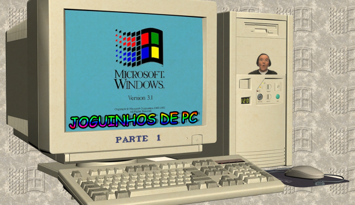

Sobre mim
Olá, meu nome é Tiago e estou estudando para entrar no setor de tecnologia ✌
Senta que lá vem história...
Lembro quando tinha 10 anos e estava passeando num shopping com meus pais. Vi em uma loja de computador um jovem cabeludo jogando Pokemon Red num tubão
Cheguei nele e perguntei: Tio, como que tu tá fazendo isso?. Sem conseguir explicar a magia da emulação de GameBoy em MS-DOS para uma criança do fundamental, ele só me entrega alguns disquetes, dizendo que em um estava o emulador, e no outro a ROM. A gente se despediu com ele me desejando "boa sorte garoto" com os olhos.
Chegando em casa, subo no "Computador da Família" e tento configurar o emulador. Não lembro quantos dias eu passei encarando a tela preta do instalador. Linhas de comando. Texto em inglês. Acho que se passaram dias...semanas? Tenho só uma vaga memória amarga da frustração de não conseguir jogar Pokemon no Computador. Eu sabia que era possível, mas para meu nível, sem manual, sem internet, sem inglês... impossível.
Passam alguns anos, e já estamos na era do ICQ e do mIRC. Nada que eu usava, só observava minha irmã usando. Usando a internet, com o Cadê.com.br e o Altavista.com, comecei a tatear no escuro pra achar a terra prometida da emulação. E quando consegui... foi maravilhoso. Acho que é uma história bem comum a várias gerações ter o contato com computadores: seja jogos, ou só poder conversar com seus amigos depois da escola.
Cursos em tecnologia
| Nome | Status | Stacks | Início | Fim |
|---|---|---|---|---|
| CS50 | Completo |
|
06/2022 | 09/2022 |
| Gama Academy: Bootcamp Webdev | Completo |
|
10/2022 | 03/2023 |
| +Devs2Blu | Em andamento |
|
04/2023 | 10/2023 (estimado) |
Formação academica
| Curso | Tipo | Universidade | Início | Fim |
|---|---|---|---|---|
| Psicologia | Bacharelado | UFSC | 2018 | 2023 |
Um pouco sobre minha carreira como Psicólogo
Trabalho há 8 anos na Prefeitura de Blumenau como Psicólogo na área da Assistência Social, atendendo vítimas de violências diversas, e trabalhando com todo tipo de perfil de público. Muitas demandas que atendemos vem de outros órgãos de proteção, como Delegacias de Polícia, Conselhos Tutelares, Escolas e órgãos da política de Saúde.
Como atendemos as vítimas, suas famílias e as acompanhamos durante um certo período, existe muita complexidade quanto às melhores maneiras de se realizar este trabalho. É um trabalho com uma metodologia dinâmica e fluída, onde temos que nos adaptar as especificidades de cada uma das situações que atendemos.
Mesmo com as dificuldades enfrentadas, e da natureza desafiadora do trabalho, é uma carreira que muito ensinou sobre como lidar com vários tipos de pessoas no atendimento ao público, além de gerar estratégias para poder fazer uma escuta técnica de assuntos difíceis das famílias relatarem para nós.
Este trabalho também tem uma camada de burocracia envolvida, já que todo tipo de atendimento que fazemos gera um relato de atendimento, e após um acúmulo destes atendimentos, geramos Relatórios Multiprofissionais para outros órgãos de proteção envolvidos.
Por que mudar de carreira?
Infelizmente sinto que cheguei no máximo de desempenho possível na minha área, e estou em busca de novos desafios. Voltar a estudar para uma nova área com um mercado de trabalho dinâmico, flexível, e com muitas oportunidades é algo que me dá energia. Sempre estou em busca de como melhorar processos, e de uma certa maneira, o engessamento estrutural do Serviço Público tem me incomodado ao longo dos anos.
Desde de que comecei a estudar programação, a cada desafio vencido, a cada conceito novo aprendido, a vontade de seguir em frente só tem aumentado! Como sou movido por resultados, descobri um certo prazer em fazer coisas difíceis, mais fáceis, além de tentar automatizar várias tarefas do meu dia a dia.